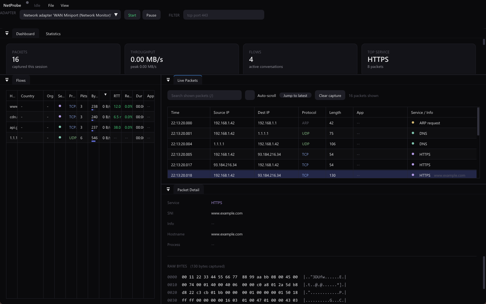
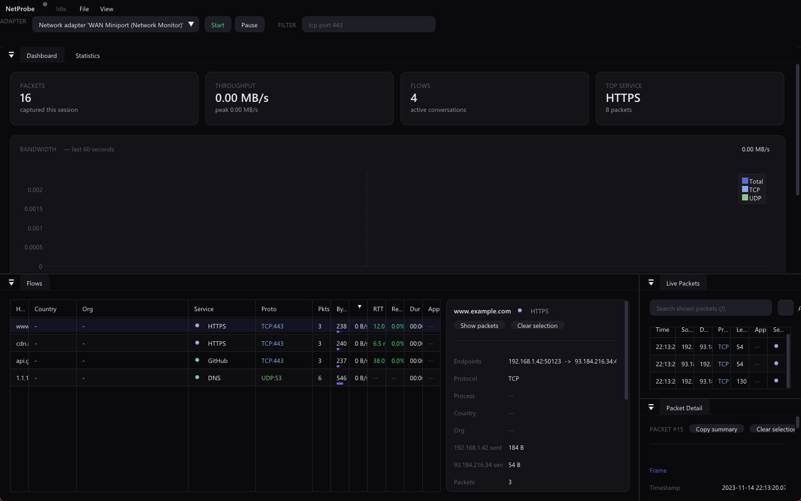
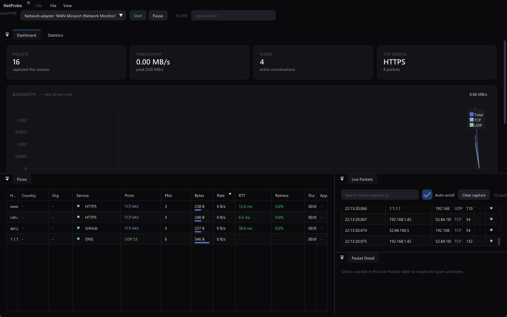

QUIC ClientHello SNI
Decrypts QUIC v1 (RFC 9000) and v2 (RFC 9369) Initial packets and reassembles CRYPTO frames across Initials to recover the SNI on any UDP port.
NetProbe is a C++20 traffic analyzer that decrypts QUIC ClientHello SNI, measures per-flow RTT, maps GeoIP and ASN, and names the process behind every connection — live, or from a PCAP.
A bounded producer–consumer pipeline: capture never blocks on the UI, and the UI never blocks on capture. Every stage is a real component in the source.
Npcap or libpcap on a backend-owned thread, pushed into a bounded queue that drops the oldest packets under load so the view stays close to live.
Stateless decode: link layer → IPv4/IPv6 → tunnel descent → transport → application hints and service classification.
Both directions collapse into one canonical flow, tracking rates, byte totals, and initial TCP RTT from the SYN/SYN-ACK delta.
The Dear ImGui frame loop drains the queue, enriches packets, and updates every view without blocking the capture thread.
Not just headers and ports — NetProbe recovers the details that usually stay hidden behind encryption, NAT, and short-lived sockets.
Decrypts QUIC v1 (RFC 9000) and v2 (RFC 9369) Initial packets and reassembles CRYPTO frames across Initials to recover the SNI on any UDP port.
Measures round-trip time from the SYN / SYN-ACK delta and color-codes it by latency, per flow.
Names the owning process on Windows (iphlpapi), Linux (/proc), and macOS (proc_pidfdinfo), captured while the socket is live.
Adds country and ASN/organization to each flow from MaxMind GeoLite2 databases.
Live BPF capture filters such as tcp port 443, a separate display filter, PCAP export, and flow export to CSV or JSON.
Npcap on Windows, libpcap on Linux and macOS, behind one ICaptureBackend interface.
A Dear ImGui dashboard you can dock, filter, and theme — reading a live adapter or a PCAP on disk.



Prebuilt release ZIPs are on GitHub — or build it yourself in a few commands.
Requires Visual Studio 2022 (C++ Desktop), the Npcap driver, and the Npcap SDK extracted to C:\Npcap-SDK.
git clone https://github.com/YehiaGewily/netprobe-cpp.git
cd netprobe-cpp
.\build_project.batOn Ubuntu/Debian, install the capture and UI dependencies first.
sudo apt install build-essential cmake libpcap-dev libgl1-mesa-dev libgtk-3-dev pkg-config
git clone https://github.com/YehiaGewily/netprobe-cpp.git
cd netprobe-cpp
cmake -S . -B build -DCMAKE_BUILD_TYPE=Release
cmake --build build --parallel
ctest --test-dir build --output-on-failurelibpcap and OpenGL ship with macOS; you need the Xcode Command Line Tools and CMake.
xcode-select --install
git clone https://github.com/YehiaGewily/netprobe-cpp.git
cd netprobe-cpp
cmake -S . -B build -DCMAKE_BUILD_TYPE=Release
cmake --build build --parallel
ctest --test-dir build --output-on-failure